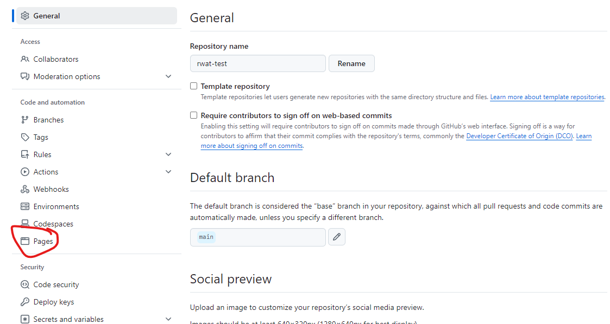
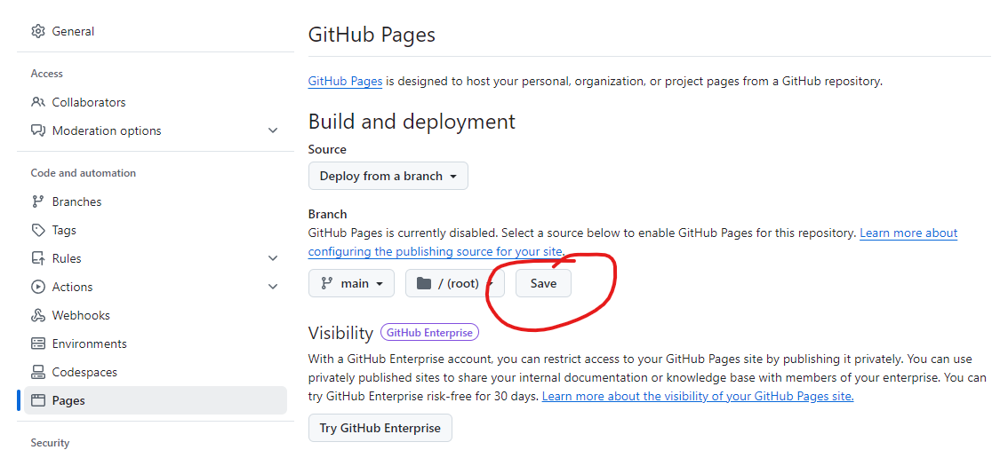
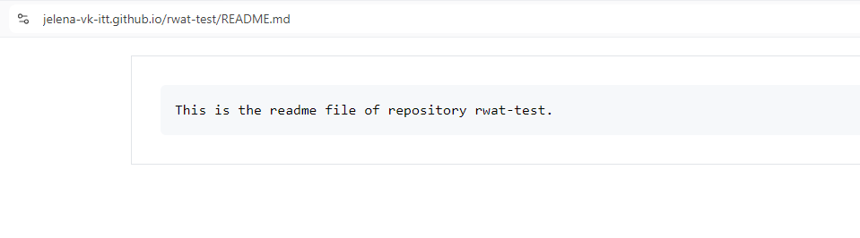

- Create a new public repository in your GitHub account and initialise it (these instructions work on a repository called rwat-test).
- Open the repository in GitHub and click Settings.

- Click Pages.

- Click None and then pick main.

- Click Save.

- Now you should be able to access the website using the URL https://your_github_name.github.io/repository_name/name_of_existing_file. Note that it takes a few minutes for changes to the repository to get reflected in the GitHub Pages website.

School of Computer Science
Creating a GitHub Pages website